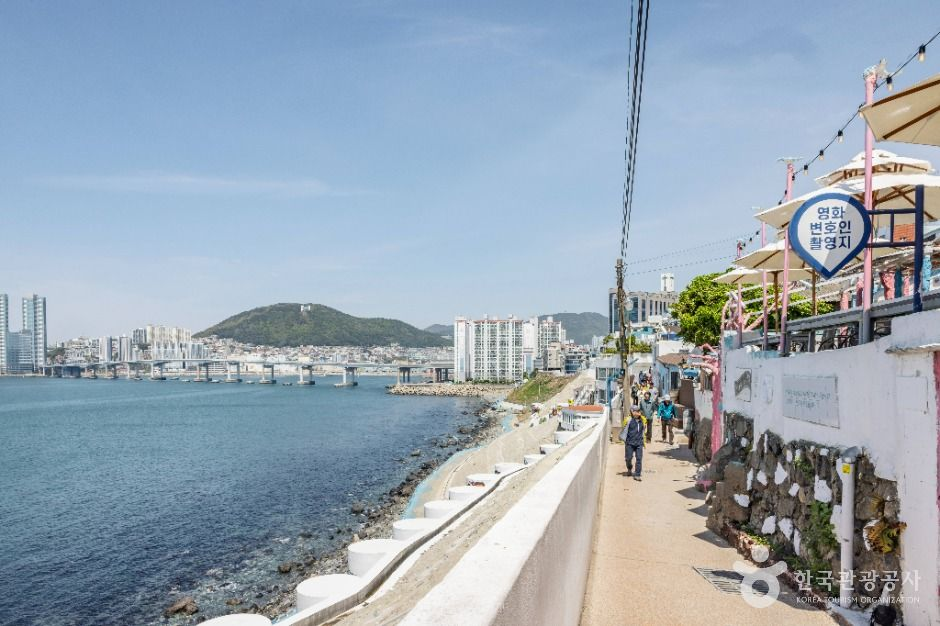
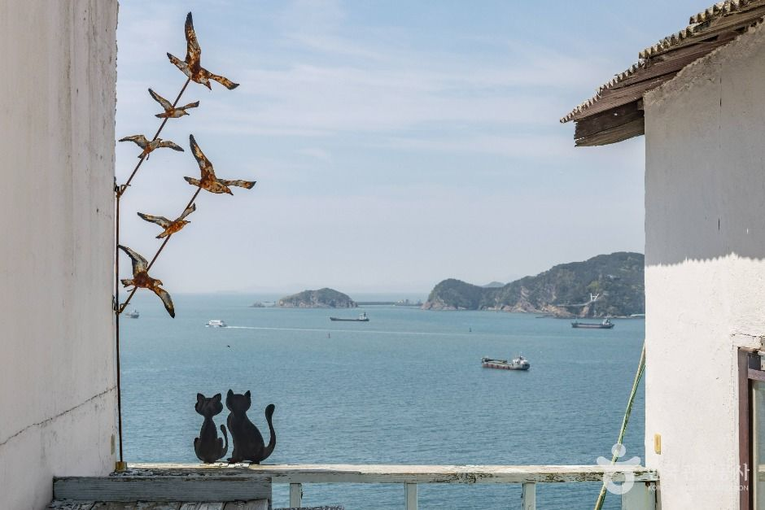
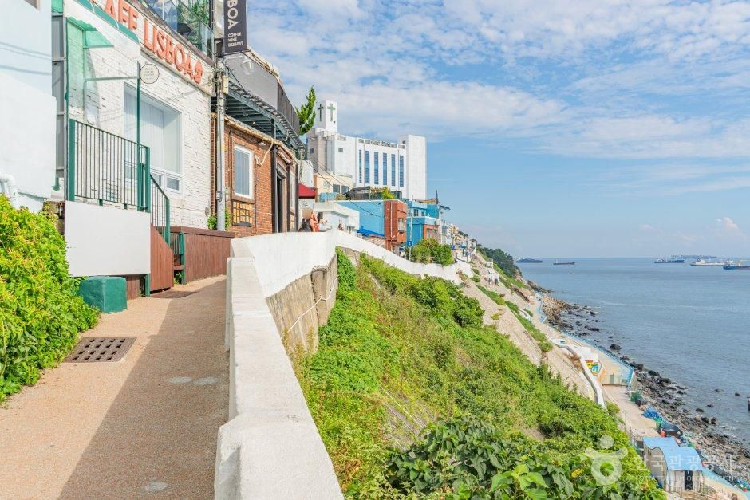
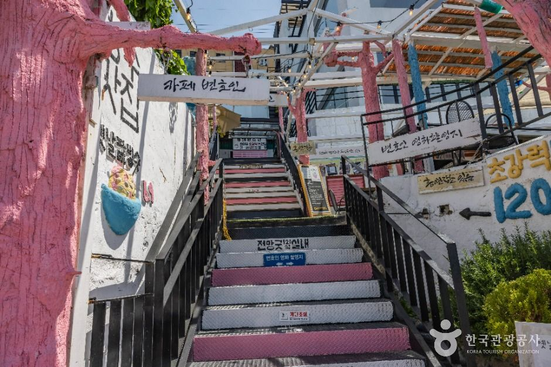
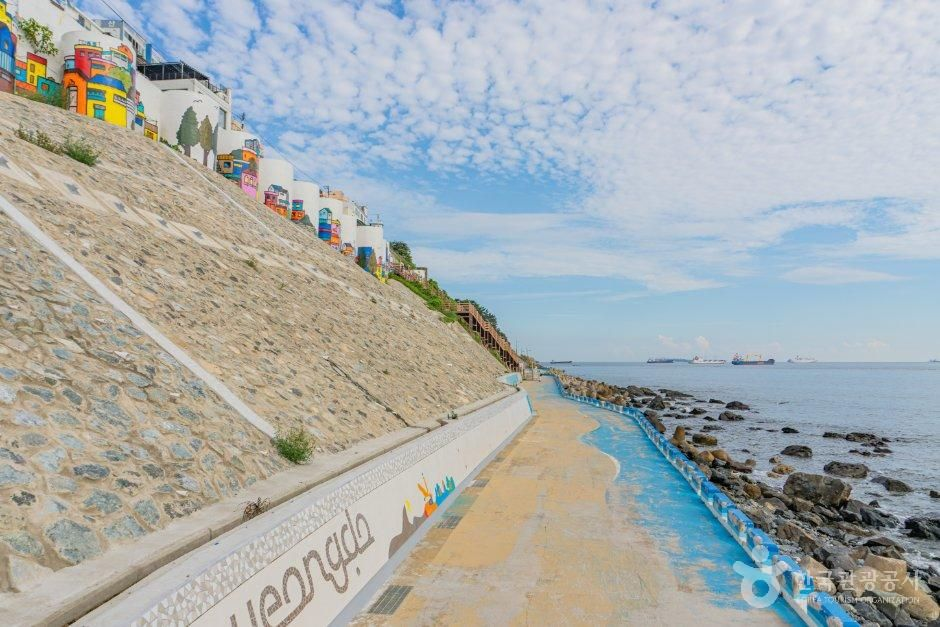

Huinnyeoul Culture Village Busan Guide: Overview
This Huinnyeoul Culture Village Busan guide covers the white cliff-top village on Yeongdo Island that many visitors call Busan's "Santorini". Huinnyeoul Culture Village (흰여울문화마을) is a row of small houses, cafés and art spaces along a narrow lane above the sea, with ships anchored offshore and the Namhang Bridge in the distance.
It is free, open all year and only about 10 minutes by bus from Nampo-dong, so it pairs easily with Jagalchi Market, BIFF Square or Taejongdae. This guide covers its history, what to see, how to get there, the coastal walk below and etiquette tips. We checked the details against Korea Tourism Organization (KTO) data, Yeongdo-gu tourism materials and recent on-site reports.
"Walk out along the cliff-top lane, come back along the sea. Then sit in a window seat and watch the ships."

A Short History: Refugee Homes to Art Village
According to KTO, the village grew up where refugees settled during and after the Korean War, building small homes on the steep slope of Yeongdo facing the open sea. The name comes from the streams that once ran down from Bongnaesan Mountain to the sea: the rushing white water looked like falling snow, so the lane became Huinnyeoul-gil, "the road of white rapids".
Huinnyeoul-gil was once the only road from Yeongdo Bridge towards Taejongdae, before Jeoryeong-ro was built. In December 2011 empty and abandoned houses were remodelled into studios and small exhibition spaces, and the village was reborn as a culture-and-arts community run with its residents. It has since appeared in many Korean dramas and films.

What to See
- Huinnyeoul-gil: the cliff-top lane itself, with whitewashed walls, murals, tiny cafés and sea views between the houses.
- The Attorney wall: a house near the start of the lane printed with lines from the 2013 film The Attorney; it is a private home.
- The five staircases: Matmeori, Kkomakjip, Rainbow, Piano and Dodolli stairs link the lane to the waterline; the pastel Piano Stairs are the most photographed.
- Jeoryeong Coastal Walk: a blue-painted seaside path (completed in 2010) at the foot of the cliff, with views of Songdo and Amnam Park.
- Huinnyeoul Coastal Tunnel: a 70 m tunnel cut through the rock in December 2018, with lighting and a famous sea-framed photo spot at the end.
- Huinnyeoul Observatory: viewing decks with coin binoculars looking over the outer anchorage, where dozens of cargo ships wait offshore.


Visitor Information
| Item | Details |
|---|---|
| Location | 194 Jeoryeong-ro, Yeongseon-dong 4-ga, Yeongdo-gu, Busan (부산광역시 영도구 절영로 194) |
| Hours | Always open, all year (residential village; visit in daytime or early evening) |
| Admission | Free |
| Info centre | +82-51-419-4067; Korea Travel Hotline 1330 |
| Subway + bus | Line 1 Nampo Station exit 6, then bus 6, 7, 9, 71, 82, 85 or 508 from stop 01063 to 흰여울문화마을 (8–10 minutes) |
| Parking | Available nearby but limited; public transport is easier |
| Strollers | No stroller rental; the stairs to the coastal walk are steep |
| Coastal walk | Some sections of the lower walk and tunnel closed for slope work in 2026; follow on-site notices |
Sources: Korea Tourism Organization data for 흰여울문화마을; Yeongdo-gu tourism guide (Huinnyeoul Culture Village); recent on-site visitor reports. Photos © Korea Tourism Organization (KOGL Type 1, attribution), unmodified. No AI-generated images.
Getting There and Walking Route
Take Busan Metro Line 1 to Nampo Station and leave by exit 6. The bus stop 영도대교.남포역 has the same name on both sides of the road; buses to the village (6, 7, 9, 71, 82, 85, 508) leave from the side numbered 01063. Get off at 흰여울문화마을 after about 8–10 minutes. Buses toward Taejongdae leave from the opposite side.
For a one-way walk, start at the 흰여울문화마을 stop, follow Huinnyeoul-gil along the cliff top to the far end, and catch bus 7, 71 or 508 back to Nampo from the 백련사 (Baengnyeonsa Temple) stop. If the lower path is open, go down one staircase and walk part of the way along the sea for the classic view back up at the white houses. Allow 1–2 hours including a café stop.

Tips for Visiting
- Be a quiet guest: people live here; do not open gates, peer into windows or photograph residents.
- Go for sunset: the lane looks out over the open sea, and late-afternoon light is the softest for photos.
- Wear proper shoes: the stairs are steep and the lower path can be wet and windy.
- Check the lower path: some coastal walk and tunnel sections have been closed for slope work; follow on-site signs.
- Combine with Yeongdo: Taejongdae and Jungni Haenyeo Village are a short bus ride further along the island.
How It Compares with Other Busan Villages
| Huinnyeoul Culture Village | Gamcheon Culture Village | Jungni Haenyeo Village | |
|---|---|---|---|
| What it is | White cliff-top lane above the open sea | Colourful hillside houses and art trail | Haenyeo seafood stalls by the rocks |
| Best for | Sea views, cafés, sunset walks | Murals, stamp map, panoramic hill views | Fresh seafood and coastal rocks |
| Time needed | 1–2 hours | 2–3 hours | 1 hour |
| Admission | Free | Free (stamp map extra) | Free |
| From Nampo | Bus, about 10 min | Bus, about 20 min | Bus, about 20 min |
Who It Suits
- Great for: Travellers staying in Nampo-dong who want an easy half-day sea-view walk.
- Great for: Photographers and café lovers, especially around sunset.
- Great for: Korean film fans looking for The Attorney filming spot.
- Less ideal: Visitors with strollers or limited mobility, because of the steep stairs.
- Less ideal: Large, noisy groups; this is a quiet residential village.
Plan Your Busan Trip
Huinnyeoul Culture Village FAQ
Where is Huinnyeoul Culture Village?
Huinnyeoul Culture Village (흰여울문화마을) is on the cliffs of Yeongseon-dong on Yeongdo Island, Yeongdo-gu, Busan. The official address is 194 Jeoryeong-ro (부산광역시 영도구 절영로 194), about 10 minutes by bus from Nampo-dong.
How do I get to Huinnyeoul Culture Village from Nampo Station?
Take Busan Metro Line 1 to Nampo Station, leave by exit 6 and walk to the 영도대교.남포역 bus stop on the side numbered 01063. Buses 6, 7, 9, 71, 82, 85 and 508 go to the 흰여울문화마을 stop in about 8–10 minutes.
Is Huinnyeoul Culture Village free, and what are the hours?
Yes. It is a residential village with no ticket, open all year. Korea Tourism Organization lists it as always open, but people live in the houses, so visit in daytime or early evening and keep noise down.
Where is The Attorney filming spot?
At the start of Huinnyeoul-gil, a house wall carries lines from the 2013 film The Attorney (변호인), starring Song Kang-ho. The house is a private home, so take your photo and move on quietly.
Is the Jeoryeong Coastal Walk and Huinnyeoul Tunnel open?
The waterside Jeoryeong Coastal Walk and the 70 m Huinnyeoul Coastal Tunnel below the village have had sections closed for slope-safety work in 2026. Follow the notices posted on site, and use the cliff-top lane if the lower path is shut.